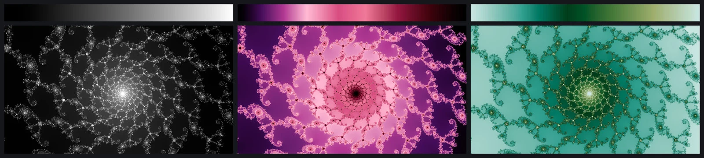
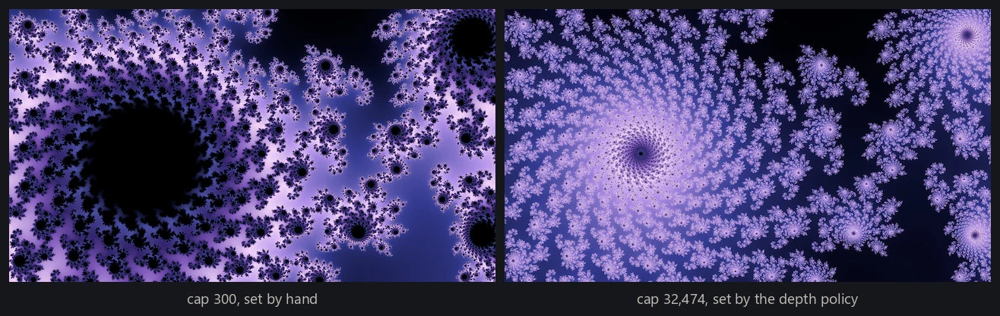
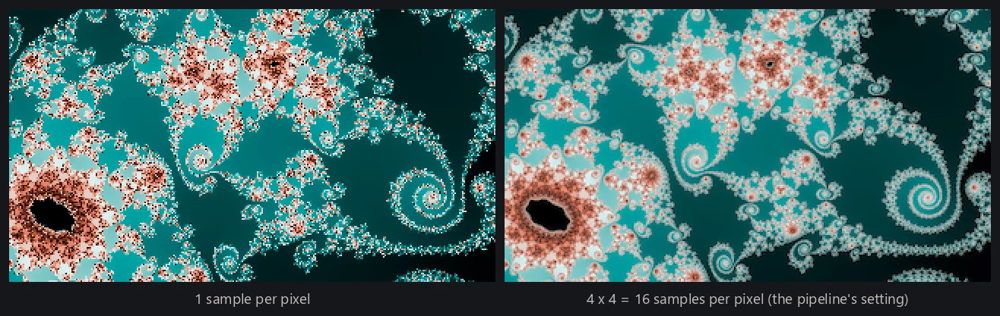
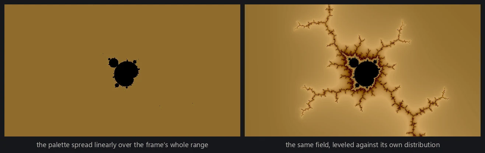

Rendering begins with the orbit calculation from escape-time fractals. At each sample position the loop records the iteration on which the orbit crossed the bailout radius, or marks the sample interior if no escape happened before the iteration cap. This page covers the rest of the baseline rendering path: how those integer counts become a continuous field, what the iteration cap and the sample count each decide, and how the field becomes a finished image, with the palette fitted to the frame rather than to the arithmetic. The smooth fields look beautiful in their own right, and they are also the foundation the more advanced rendering modes build on. Palette selection itself is covered in color palettes.
From counts to colors
The simplest rendering rule uses the integer escape count directly as a color coordinate. Every sample that escapes on step 40 takes one color, every sample that escapes on step 41 the next, and so on. This works, and it is how most first Mandelbrot programs are written. But the count is an integer, so the result is a staircase: neighboring regions with counts of 40 and 41 meet at a hard contour, and the whole image terraces into bands of solid color instead of continuous shading.
The smooth iteration count
To convert the discrete escape time into a continuous one, start from what the integer count discards. It records that the orbit crossed the bailout radius during step 40, not whether it barely crossed or shot far past, which is exactly the missing fractional part. And that fraction is recoverable from the orbit's final value. Once |z| is large the leading power dominates the update, so each further step roughly raises |z| to the degree. That multiplies log |z| by the degree, and multiplying log |z| by the degree adds one to its logarithm in that base, so a double logarithm behaves like a clock that ticks once per iteration. Reading that clock at the moment of escape says where within the final step the crossing really happened, and gives the smooth iteration count:
where n is the integer count, z is the orbit's value when the loop stopped, d is the degree, and B is the bailout radius the loop tested against. The subtracted term lands between 0 and 1 and supplies the fractional part, so the floor of the smooth count is the integer count exactly. Dividing by ln B inside the logarithm is what pins that fractional part to zero at the bailout boundary. To a palette normalized over the frame that division is an invisible constant shift, but several of the rendering modes read the fraction itself as how far into the last step the orbit got, and without it they band in a way that looks like brickwork.
One practical wrinkle: the formula is only accurate when the orbit has traveled well past the bailout circle before the loop stops, so the engine tests escape against a radius far larger than the mathematical minimum, which for a degree-d family is 2 raised to the power 1/(d − 1). That radius is enough to decide escape; measuring it smoothly wants much more room, and the engine uses 216. The angle-reading modes need the same headroom for a second reason: they assume the orbit's last value is dominated by the recurrence rather than by the constant.
Rendered this way, the terraces melt into continuous ramps. Each sample now carries one continuously varying number, and the two-dimensional array of those numbers is a floating-point field. Turning a field into colors is a separate, later decision, which is why the same field can be recolored without recomputing a single orbit. Rendering modes introduces other fields measured from the same orbits, along with several modes that never reduce an orbit to a single number at all.

Iteration caps
A finite renderer cannot wait forever to tell a bounded orbit from one that escapes very late. So every renderer picks a cap: iterate each orbit at most N steps, and treat any orbit still bounded at N as interior for that render, painted with the flat interior tone. Reaching the cap doesn't prove the orbit is bounded; it's just the point where the renderer stops checking.
Picking the cap takes some care. Too low a cap misclassifies: points near the boundary that would have escaped at step 5,000 get treated as interior, the flat region swells outward, and it swallows exactly the filigree the image exists to show. Once the cap is high enough to resolve the structure at the scale being drawn, raising it further buys nothing, and the cost of that lands unevenly: a sample that escapes in a dozen steps is indifferent to the cap, while every sample that reaches it pays for all N iterations, so a frame with real interior in view gets roughly linearly more expensive as the cap climbs.
The right cap also depends on the zoom. Escape times at a given visual scale grow roughly like the logarithm of the magnification, so the cap should follow depth rather than magnification and grow linearly in octaves. The engine uses the frame width as its proxy and raises the cap by a fixed share of a base value per octave, clamped between a floor and a ceiling:
where w is the frame width in the complex plane, and 3 is the width of a view of the whole set. I measured those constants rather than reasoning them out: I took locations spanning ten octaves of depth and walked each one up a ladder of caps until the rendered structure stopped changing, and the converged cap came out at a near-constant multiple of that shape.

Supersampling
I use supersampling because everything so far computes one orbit per output pixel, from the pixel's center, and a pixel really covers a small rectangle of the complex plane. Near the boundary the fractal has structure far below pixel scale, at every scale, so a single sample through the middle of that rectangle is a coin flip: filaments thinner than a pixel show up as scattered speckle, and fine features shimmer or break apart. That's aliasing, the same thing that puts staircase edges on computer-drawn lines.
At a supersampling factor s the engine evaluates and colors the whole image on a grid s times wider and s times taller, so there are s2 orbits behind every output pixel, and then reduces that image to the target size. The reduction is the part that actually removes the aliasing. A plain average of each output pixel's own subsamples would ignore everything just outside the pixel, so a filament crossing a pixel boundary would land on one side and not the other, and that aliases too. The engine reduces with a Lanczos-3 filter scaled to the reduction, which reaches three output pixels either way rather than three source samples, and it filters in linear light and converts to 8-bit color only at the very end, because averaging gamma-encoded values darkens every edge in the picture. The production setting is s = 4, so sixteen orbits stand behind each finished pixel. Orbit work grows with s2, which makes this one of the expensive quality settings.

Dynamic range
The field that comes out of all this has a badly skewed distribution. Most of the frame escapes almost immediately, while a small number of samples near the boundary survive for thousands of steps, and the structure worth looking at is often compressed into a thin slice of that range. Interior samples are not values at all, so they take no part in this. Spread the palette linearly from the frame's lowest value to its highest and a handful of large values decide almost the whole numerical range: nearly every sample lands in a narrow interval at one end of the gradient, and the image reads as a flat wash with a bright seam along the boundary.
Fractal software has a few classic ways around this. The most common is to repeat the palette: cycle it every fixed number of steps, or mirror a non-cyclic ramp end to end so the repeats join smoothly, so that no single sweep has to cover the whole range. That is why so many classic Mandelbrot renders look striped with rings of repeating color.
I kept the repeating palette, but I took the guesswork out of the range it repeats over. Before any color exists, the field is normalized by a percentile stretch: the 0.5th and 99.5th percentiles of the frame's own finite values become the two ends of the working range, and the half a percent past each end is clipped flat. It is the automatic cousin of dragging the levels sliders in a photo editor, except that it reads the distribution actually present in the frame rather than the theoretical extremes. A crop normalizes against its own samples rather than the frame it was cut from, so every image is fitted to what's actually in it. How many times the palette sweeps that stretched range is then one of the palette settings a render records, covered in color palettes, rather than a fixed step guessed against an unknown range. This is a distinct operation from the gentler autolevel that the finished, colored image gets later in the pipeline, which color palettes also covers.

The smooth rendering
Taken together, a render is a location plus a short list of choices. Evaluate the location on a supersampled grid at an automatically chosen cap; keep smooth values rather than integer counts, with interior samples held separately; percentile-stretch the finite values against their own distribution; map a palette across the result; and reduce the supersampled colors to the finished size with the linear-light Lanczos filter. This gives the project's smooth rendering, the clean classic look of these fractals, and it's one style among several. Rendering modes changes what gets measured from each orbit, or how those measurements are colored, mostly reusing this same machinery, and color palettes covers how the palette itself is chosen.